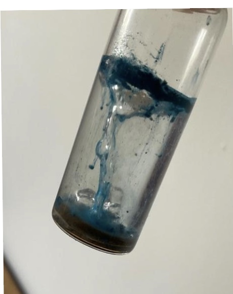
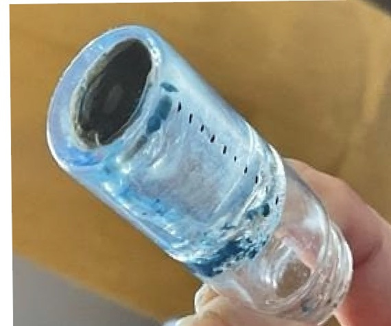
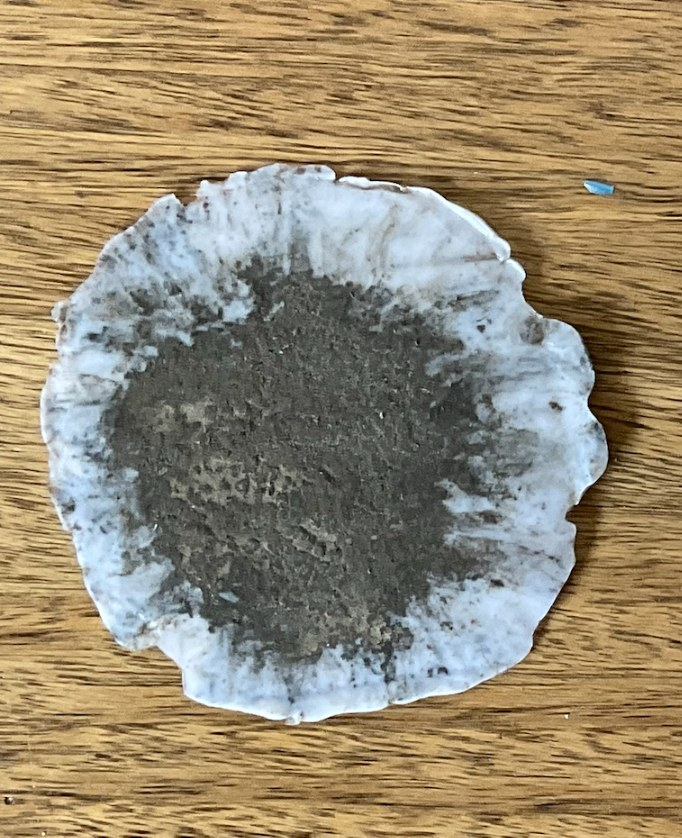
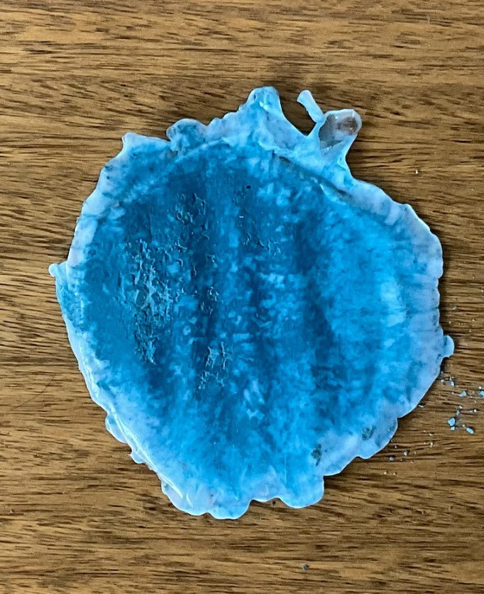
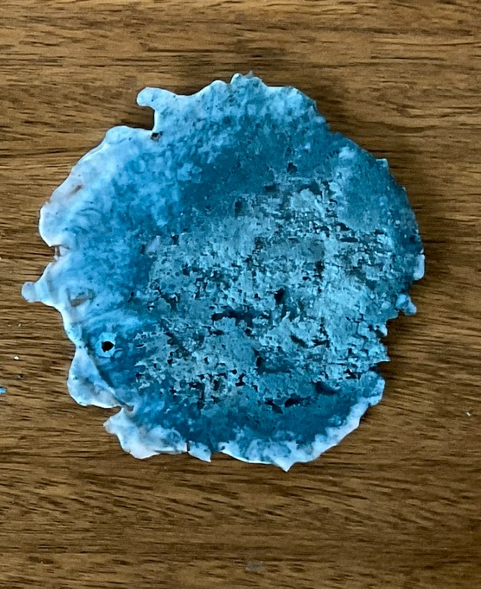
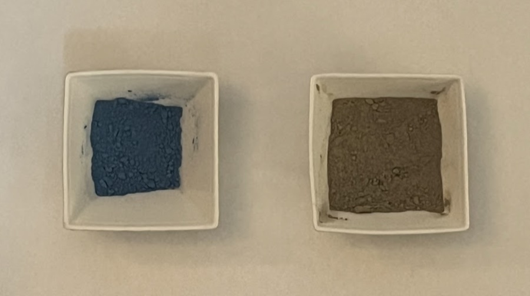
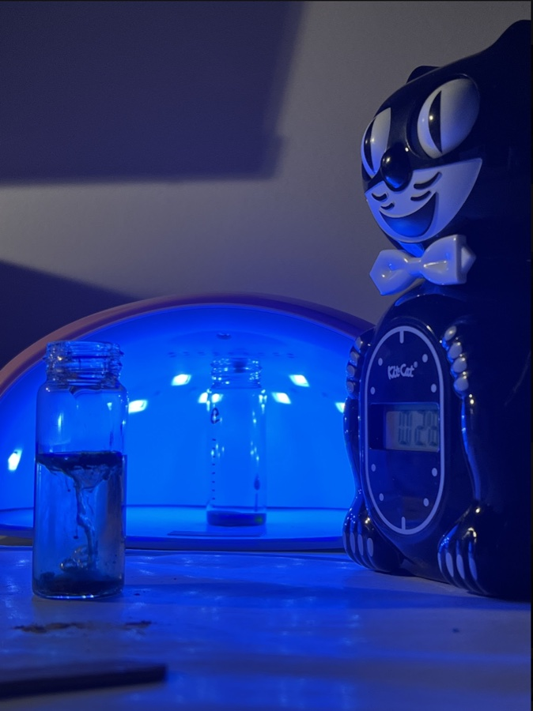
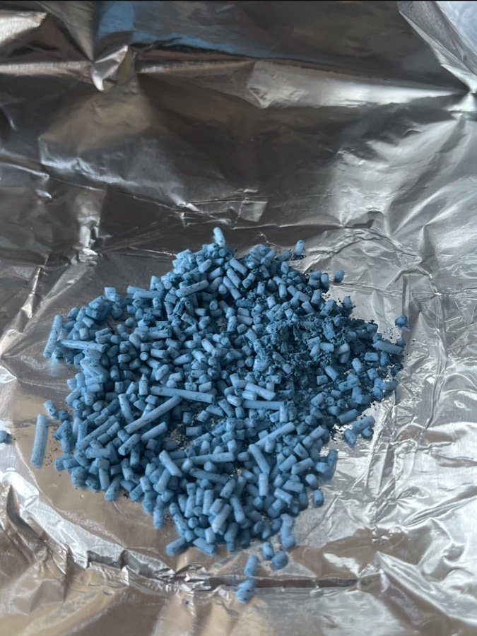

TALLER DE PROTOTIPOS 2026 · MCD UAI · TAREA 1
Material compuesto de lapislázuli
Banco de pruebas de baja resolución: dos rutas de fabricación que llegan al mismo hallazgo de carga viable.
Cabezas, F. · López, V.
Encargo T1 · Taller de Prototipos, prof. Maximiliano Pazols
Baja resolución: dos rutas, un banco de pruebas casero
01 · PROPÓSITO DEL PROTOTIPO
La baja resolución debía responder una pregunta concreta
PREGUNTA DE APRENDIZAJE
¿Qué rango de carga mineral permite fabricar una muestra estable sin bloquear el proceso?
HIPÓTESIS
Existe un rango bajo de carga (proporción de polvo mineral respecto al total de la mezcla) que conserva una señal material reconocible y permite curar (SLA) o encapsular (FDM) la mezcla.
CRITERIOS DE ÉXITO
La muestra completa el proceso sin fallar.
La carga (polvo mineral o su símil) permanece distribuida y contenida.
El protocolo puede trasladarse a una probeta normalizada.
Fuera de alcance: desempeño mecánico, apariencia final y validación con lapislázuli real.
02 · DISEÑO DEL EXPERIMENTO
El banco casero comparó dos rutas con el mismo criterio
RUTA SLA · CURADO UV
Resina líquida UV (SLA) + polvo mineral sustituto (carga o «filler»), dosificado como % en peso.
Control (0 g polvo), 20%, 33% y luego 7% de carga en 4 ml de resina.
Capas de 3 mm, 3 min de exposición UV por capa (lámpara 36 W, 405 nm).
Curado, translucidez y sedimentación del polvo en la resina.
RUTA FDM · ENCAPSULADO
Filamento PLA molido en pellet + polvo mineral sustituto (cemento, esmalte o mezcla) como carga.
Pesaje (1 g de carga por cada 8 g de PLA), molienda y prensado manual.
Sándwich térmico (sandwichera) a 180–200 °C, ~5 min.
Encapsulado del polvo, continuidad y cohesión del filamento.
LECTURA COMÚN ¿La muestra se fabrica, contiene la carga y entrega un rango viable para la siguiente iteración?
03 · ITERACIÓN SLA
SLA encontró el rango al reducir drásticamente la carga
20%
Intento inicial
No curó (36 W UV, 3 min/capa). La resina quedó líquida bajo una cáscara superficial.
33%
Confirmación
Cemento, esmalte y mezcla (cargas de 1–2 g en 4 ml de resina) repitieron la falla.
7%
Cambio
Tres muestras (1 g de carga en 13 ml de resina) curaron completamente y conservaron translucidez.
✓
Rango viable
El protocolo pasa a probeta, ahora con lapislázuli real en vez del símil.
APRENDIZAJE La variable crítica fue la opacidad del filler (carga de polvo mineral) y su efecto sobre la penetración de la luz UV, no la resina en sí misma.
Ensayos en resina UV (SLA): dos fases
FASE 1 · NO CURÓ

Protocolo: 5 capas de 3 mm, 3 min UV por capa (36W, 405nm), capa final 5 min. La resina quedó líquida bajo una cáscara superficial parcialmente solidificada.
FASE 2 · CURÓ Y TRASLÚCIDO

Mismo protocolo (3 mm / 3 min por capa). Las tres pruebas curaron satisfactoriamente sin requerir tiempo adicional.
wt% = m_polvo ÷ (m_polvo + m_resina) × 100. Umbral de curado entre 7% y 20% de carga: la variable crítica es la opacidad del filler, no la concentración en sí misma.
04 · MECANISMO OBSERVADO
El curado ocurre antes de que la carga pueda sedimentar


mezcla
capa inmovilizada
cemento al fondo
40–50 min esmalte desciende por completo
INTERPRETACIÓN
La diferencia de densidad entre el polvo mineral (carga) y la resina no compromete la muestra curada: el curado UV fija las partículas antes de que alcancen a desplazarse de forma significativa.
05 · ITERACIÓN FDM
FDM funcionó mejor con 11% de esmalte puro
11%
Cemento PARCIAL
Carga: 1 g cemento en 8 g de PLA. Quedó contenida solo en parte, sin continuidad homogénea.

11%
Esmalte VIABLE
Carga: 1 g esmalte vitrificable en 8 g de PLA. Único encapsulado homogéneo, la mejor aproximación al material real.

27%
Mezcla INSUFICIENTE
Carga: 1 g cemento + 2 g esmalte en 8 g de PLA. Superó la capacidad de encapsulado de la matriz.

APRENDIZAJE El resultado depende del porcentaje de carga, la granulometría del polvo y su compatibilidad con la matriz de PLA, no solo de añadir más polvo.
Tres certezas que despejamos



06 · DECISIÓN Y PRÓXIMO ENSAYO
La siguiente iteración empieza con dos formulaciones controladas
SLA · 7%
Lapislázuli real (no símil), en tres granulometrías (25/50/100 µm) y el mismo protocolo de capas de 3 mm.
FDM · 11%
Lapislázuli real, pellet calibrado (1 g de polvo en 8 g de PLA) y control estricto del encapsulado.
CRITERIOS PARA PASAR
La baja resolución ya validó el rango con símiles. Media resolución debe comprobar si ese aprendizaje se mantiene con lapislázuli real.
Baja resolución ya validó el rango. Media resolución lo hace ahora con lapislázuli real.
Cabezas, F. · López, V. · Taller de Prototipos 2026
Media resolución: material real, probeta normalizada
Alta resolución: catálogo especulativo antes que pieza final
02 · MEDIA RESOLUCIÓN
Un ciclo que se repite en cada serie de probetas
Este ciclo se repite serie tras serie de probetas en media resolución, hasta pasar el checkpoint ASTM. En alta resolución la lógica cambia: se valida con impresiones de calibración (benchy, torre de temperatura, tolerancias), no con series repetidas de la misma probeta.
Qué define al material, y qué falta por responder
(memoria de piedra)
y escalabilidad
y rendimiento
y trazabilidad
Marco de criterios para alta resolución: cada atributo define qué debe demostrar la pieza final, no solo la probeta.
Baja y media resolución quedan documentadas. Alta resolución y el material real definen el resto de la ruta.
Cabezas, F. · López, V. · Taller de Prototipos 2026